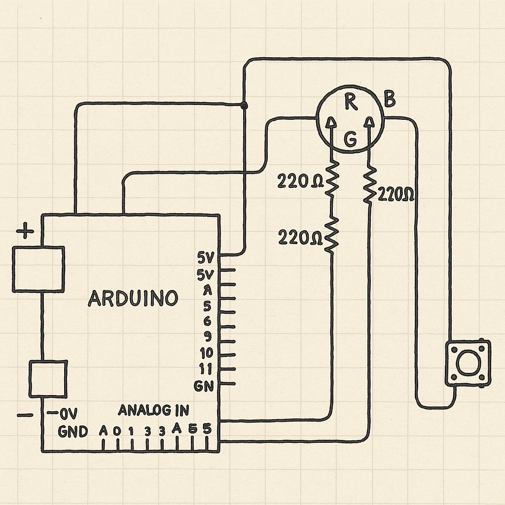

<!-- ===== Media styles (optional, place once in <head> or keep here) ===== -->
<style>
  figure { margin: 1rem 0; }
  figcaption { color:#6b7280; font-size:.95rem; margin-top:.25rem }
  .media-grid { display:grid; gap:12px; grid-template-columns: 1fr; }
  @media (min-width: 720px){ .media-grid { grid-template-columns: 1fr 1fr; } }
</style>

<section>
  <h2>The Schematic & Circuit Media</h2>

  <!-- Hand-drawn schematic -->
  <figure>
    
    <figcaption>My hand-drawn wiring: LEDs on pins 3/5/6 through 330 Ω to GND; button on D8 → GND (INPUT_PULLUP).</figcaption>
  </figure>

  <!-- Your real breadboard photo + an animated GIF of the fade -->
  <div class="media-grid">
    <figure>
      
      <figcaption>Photo of my built circuit (same wiring as the schematic).</figcaption>
    </figure>

    <figure>
      <!-- If you have a GIF: -->
      
      <!-- Or use an MP4 instead:
      <video src="fade_demo.mp4" autoplay loop muted playsinline style="max-width:100%; border-radius:10px;"></video>
      -->
      <figcaption>Animated demo of the synced fade.</figcaption>
    </figure>
  </div>
</section>
